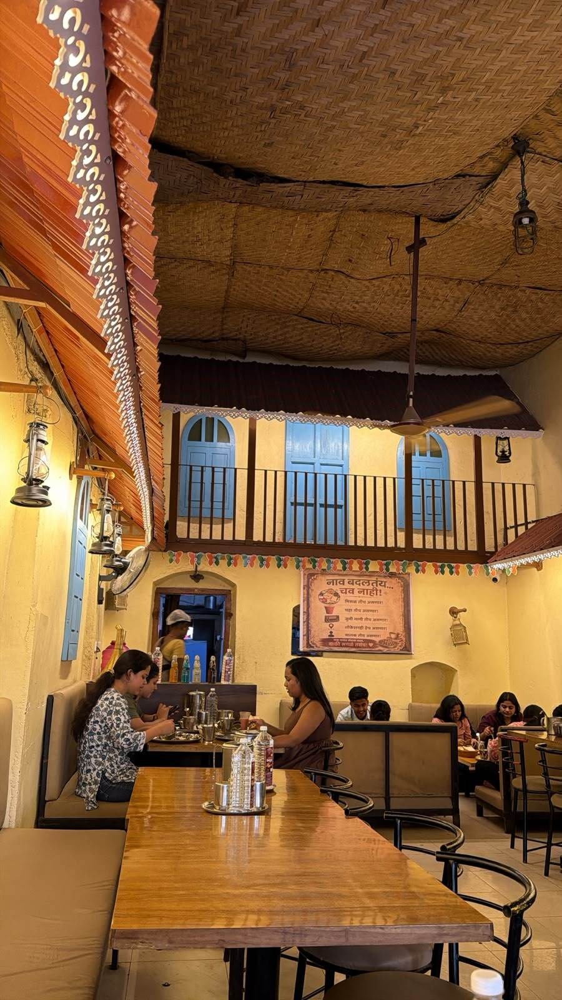

The Spirit of Chhaava
Same taste. A new name.
Chhaava Misal is a misal café in Kolhapur, built around a simple promise: bold, honest Maharashtrian flavour served with real hospitality. Inside, a rustic wada-style room, with woven ceiling, blue shutters and lantern light, invites you to sit long and eat well.
A poster in the café carries the message “नाव बदलतंय… चव नाही!”, meaning “The name is changing, the taste is not.”
Owner to confirm: founding story, years in business, and the full text of the “name change” poster.
